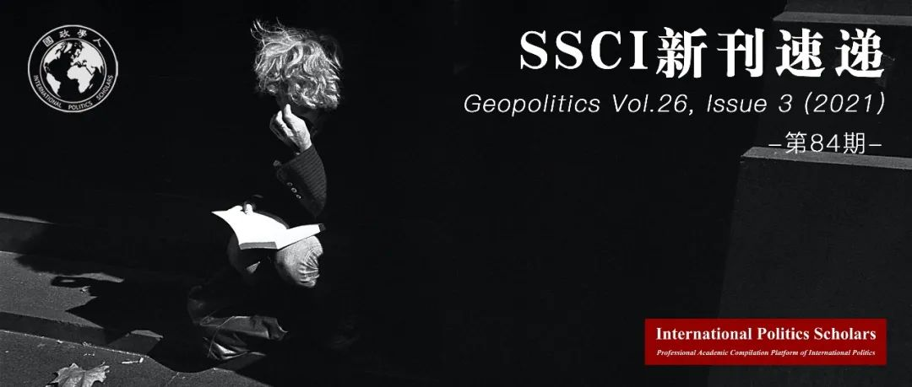

收录于合集

期刊简介
Geopolitics（《地缘政治》）是一个致力于当代地缘政治研究的国际性多学科期刊，为学者们提供了一个学术分析的舞台。该期刊从多学科的视角解决地理和全球政治的交叉，主要关注州际关系、大国关系、区域一体化、能源与资源、贸易路线和国家边界等问题领域。2019年该期刊影响因子为2.65。
本期编委
【编译】 孟晓宇 张鸿儒 孙唯一 杨朔 缪高意
【校对】 池佳曈 朱家羲 杨朔 孙唯一 黎开朗
【审核】 丁伟航 阮镇炜 晋玉 朱文菡 徐一君
【排版】 林祉欣
【美编】 臧泽华

本期目录
1.环境地缘政治和外层空间
Environmental Geopolitics and Outer Space
2.美国太空港：进入外空的竞争与“人人宇航员”
Spaceport America: Contested Offworld Access and the Everyman Astronaut
3.航天飞机任务贴片的地缘政治想象
Geopolitical Imaginaries of the Space Shuttle Mission Patches
4.中国在巴拿马：从周边外交到大战略
China in Panama: From Peripheral Diplomacy to Grand Strategy
5.亚瑟·查理斯·克拉克外太空地缘政治中的帝国主义、技术与热带性
Imperialism, Technology and Tropicality in Arthur C. Clarke’s Geopolitics of Outer Space
01
环境地缘政治和外层空间
【题目】 Environmental Geopolitics and Outer Space
【作者】 Julie Michelle Klinger，德拉威尔大学的地理学家，曾担任波士顿大学弗雷德里克·帕迪（Frederick S. Pardee）全球研究学院国际关系助理教授。她还曾担任该大学全球发展政策中心“土地利用与生计计划”的副主任。她研究开发和资源利用的地理、地质和地缘政治。
【摘要】 当代太空竞赛开展的文化、法律、预算、基础设施和后勤过程，在地球和外太空都产生了可测量的环境足迹。这些足迹的下落与地缘政治力量和脆弱性这两个更大的问题有关，这意味着人类与外层空间的接触也是一个环境正义的问题。在地球上，环境正义在多个尺度上展开:空间发射造成的本地和平流层排放，在所谓的外围地区放置与外层空间有关的基础设施，以及权力在决定使用此类基础设施是否有助于社会环境建设方面的作用。在地球之外，环境地缘政治同样是多尺度的，表现为轨道碎片等当代污染问题和行星保护议定书等辩论。地球和外层空间的环境地缘政治不可避免地与人民、地方和机构之间的空间特权政治和不公平的牺牲相联系。本文通过古典的、批判的、环境的和女权主义的地缘政治理论探讨了外层空间环境的概念。
The cultural, legal, budgetary, infrastructural, and logistical processes through which the contemporary space race unfolds have measurable environmental footprints on Earth and in outer space. The question of where these footprints fall is arbitrated by larger questions of geopolitical power and vulnerability, which means that human engagement with outer space is also a question of environmental justice. On Earth, environmental (in) justice unfolds on multiple scales: local and stratospheric emissions from space launches, the placement of outer space related infrastructure in so-called peripheral places, and the role of power in determining whether the use of such infrastructure aids socio-environmentally constructive or destructive practices. Beyond Earth, the environmental geopolitics are likewise multiscalar, manifesting in contemporary pollution issues such as orbital debris and conservation debates such as planetary protection protocols. The environmental geopolitics of Earth and outer space are inextricably linked by the spatial politics of privilege and the imposition of sacrifice – among people, places, and institutions. This paper explores the concept of outer space environments through classical, critical, environmental, and feminist geopolitical theories.
【编译】 孟晓宇
【校对】 池佳曈
【审核】 丁伟航
02
美国太空港：进入外空的竞争与“人人宇航员”
【题目】 Spaceport America: Contested Offworld Access and the Everyman Astronaut
【作者】 Katherine G. Sammler，加利福尼亚州立大学海洋分校全球研究与海洋事务系助理教授；Casey R. Lynch，内瓦达大学地理系助理教授。
【摘要】 美国太空港，一个具有奇特曲线几何外观的建筑，本身就像是从新墨西哥州特鲁斯康西昆西斯市升起的一架太空飞船，传递着“人人都是宇航员”的希望。但这个建设费用超过2亿美元、2017年运营预算为285万美元的公私合作项目，并没有提供类似于机场的垂直运输服务。随着维珍银河（Virgin Galactic）公司在举行天价零重力音乐节与商业旅行项目上陷入停滞，美国太空港成为了教育性质的火箭俱乐部的所在地以及好莱坞电影的取景地，而大众仅能通过购买昂贵的导览服务进入此地。与美国太空港项目的遭遇一样，进入外空这一行为本身引发了公共所有权与私人所有权、排他性等问题。随着民族国家在外空活动中的角色转变，该空间有可能成为资本积累的另一场所，也有可能表现为社会运动或“社会空间项目”中所设想的那样。本文追溯了以美国太空港为代表的外空活动中公共利益与私人利益间的重新调整，以及自1967年联合国《外层空间条约》提出外空作为公有资源这一构想以来关于进入外空观念的演变。本文将新兴的公私合作霸权与三个自主性太空组织的行为进行了对比。上述这三个组织构建了替代性的政治经济模型、技术系统以及对进入外空的文化想象。
Spaceport America, a spectacle to see with curvilinear geometry that itself looks like a spacecraft rising out of the desert near Truth or Consequences, New Mexico, conveys a hope of the everyman astronaut. Yet this private-public project, spending over $200 million in state taxpayer money to build and with a $2.85 million operating budget for 2017, does not provide the vertical transport analog of an airport. As Virgin Galactic stalls in launching its astronomically-priced zero-gravity music festival and commercial passenger flights, the facilities have been dusted off for educational rocketry club launches and Hollywood film backdrops while most public access to the grounds is restricted to expensive guided tours. As with the Spaceport, access to outer space itself raises questions of public versus private ownership and exclusivity. With the shifting role of nation states in offplanet activity, there are openings for outer space to become another site of capital accumulation or to manifest as envisioned by social movements and “community space programs.” This paper traces the ongoing realignment of public and private interests in offworld activity, of which Spaceport America is representative, considering how notions of offworld access have evolved since the aspirational vision of space as a commons laid out in the 1967 UN Outer Space Treaty. The paper juxtaposes the emerging public-private hegemony with the actions of three autonomous space organizations that actively construct alternative political economic models, technological systems, and cultural imaginaries of offworld access.
【编译】 张鸿儒
【校对】 朱家羲
【审核】 阮镇炜
03
航天飞机任务贴片的地缘政治想象
【题目】 Geopolitical Imaginaries of the Space Shuttle Mission Patches
【作者】 Andrew S. Maclaren，英国阿伯丁大学，地理与环境系。
【摘要】 本文通过研究航天飞机任务贴片中的图像，探讨了贴片中蕴含的（地缘）政治想象。宇航员通常会在宇航服手臂的位置佩戴特有的任务贴片，这些独特的贴片代表着不同航天飞机的特殊任务。借助视觉方法和流行的地缘政治学，本文批判性地研究了这些贴片所包含的图像、官方文件对贴片的描述以及它们的产生历史。由此，本文提出了三个相互关联的论点。首先，航天飞机计划的任务贴片在其图像中呈现了独特的美国外层空间框架，因此可以被解读为地缘政治文本。第二，贴片中包含的图像反映了其出厂时的地缘政治，但这也微妙地显示着美国在外层空间的主导地位。最后，在博物馆和大众文化中使用这些贴片有助于构建美国在外层空间的“天定命运论”。同时，本文不仅介绍了人类通过物质文化生产与外层空间接触的具体实例，也推进了从地缘视角研究外层空间的进程。
This paper engages with the (geo)political imaginaries of the Space Shuttle mission patches, through a consideration of the iconography they contain. Each Space Shuttle mission had a unique patch designed to represent the mission, which were typically worn on the arm of astronauts’ space suits. Drawing on visual methodologies and popular geopolitics, this paper critically engages with the patches’ iconography, their descriptions in official documentation, and the histories that frame their production. In doing so, this paper advances three interrelated arguments. First, that the mission patches of the Space Shuttle programme presented a uniquely American framing of outer space in their iconography and can thus be read as geopolitical texts. Second, that the iconography within the patches reflected the contemporary geopolitics of their time of production, but continued to subtly demonstrate American dominance in outer space. Finally, that the consumption of the patches in museums and through popular culture assist in the construction of American Manifest Destiny in outer space. This paper presents tangible examples of humanity’s engagement with outer space through the production of material cultures, while also pushing forward the agenda for further critical geographical engagement with outer space.
【编译】孙唯一
【校对】杨朔
【审核】晋玉
04
中国在巴拿马：从周边外交到大战略
【题目】 China in Panama: From Peripheral Diplomacy to Grand Strategy
【作者】 阿瓦罗·门德斯（Alvaro Mendez），伦敦政经学院高级研究员，伦敦政治经济学院全球南方研究中心联合发起人、中心联合主任，复旦大学访问学者（2018.10-2019.1）。研究方向为中国- 拉丁美洲关系、外交政策、发展中国家政治；克里斯·奥登（Chris Alden），伦敦政治经济学院非洲研究中心高级研究员、国际关系教授、南非国际事务研究所全球大国与非洲项目主任。
【摘要】 从连接国内西部和中亚周边的基础设施外交，到涵盖世界体系外围的“一带一路”倡议，中国发展战略的全球化展示了中国经济政治宏大战略的快速演变。巴拿马这个小国是全球贸易体系中的一个关键节点，能够对中国的国家安全和国际影响力做出巨大贡献。因此，中国在巴拿马的经济政策不仅开放了拉丁美洲和加勒比的市场以促进中国的商业渗透，同时也在这个全球南方最偏远的地区扩大了其政治影响力。中国的双轨大战略让其他国家在自由的国际主义共同繁荣和零和的现实主义竞争之间做出选择。这种大胆的做法依赖于小国之间的关系，特别是像巴拿马这样的半边缘国家，将中国置于正在形成的全球南方大联盟的前沿，以期共同应对美国的霸权。
The globalization of China’s development strategy, from its origins as infrastructure diplomacy connecting its domestic west with its Central Asian periphery, into the transnational Belt and Road Initiative encompassing the periphery of the world system, epitomises the rapid evolution of a Chinese grand strategy of great economic and political ambition. The small state of Panama is a key node in the global trading system that can make an unexpectedly large contribution to China’s national security and international influence. Accordingly, China’s economic statecraft in Panama is not only opening up the Latin America and Caribbean markets to further Chinese commercial penetration, but is simultaneously expanding its political influence in this remotest part of the global South. China’s is a two-track grand strategy positing to other nations a choice between a liberal internationalist co-prosperity and a zero-sum realist contest. This audacious approach relies on relational power amongst small states, especially semi- peripheral ones like Panama, to put China at the forefront of what is shaping up as a grand coalition of the global South collectively challenging American hegemony.
【编译】杨朔
【校对】孙唯一
【审核】朱文菡
05
亚瑟·查理斯·克拉克外太空地缘政治中的帝国主义、技术与热带性
【题目】 Imperialism, Technology and Tropicality in Arthur C. Clarke’s Geopolitics of Outer Space
【作者】 Oliver Dunnett，贝尔法斯特女王大学
【摘要】 基于对二十世纪杰出空间技术倡导者亚瑟·查理斯·克拉克（1918-2008）被收养在斯里兰卡时的生活与作品的分析，本文探讨了外太空的地缘政治文化。在将地缘政治学与科学连接起来的研究框架中，进一步讨论帝国主义、技术和热带性之间的联系有助于证明克拉克的地理想象对理解外太空地缘政治文化的相关性。本文从三个方面考察了克拉克的生平和作品：首先是他于20世纪50年代末到70年代初在斯里兰卡的水下探险活动；其次是他于1979年获得雨果奖和星云奖的小说《天堂的喷泉》；最后是他于20世纪80年代初对斯里兰卡成为未来外太空技术中心的推动。本文认为，我们可以通过研究地点、景观和身份的不同方面来理解关于外太空的地缘政治解读。
This paper addresses geopolitical cultures of outer space by examining the selected life and works of Arthur C. Clarke (1918–2008), one of the leading space technology advocates of the twentieth century, in the specific context of his adopted home of Ceylon/Sri Lanka. Within the framework of studies that have connected critical geopolitics and science, further discussions concerning the interface between imperialism, technology and tropicality help demonstrate the relevance of Clarke’s geographical imagination to understanding geopolitical cultures of outer space. Three aspects of Clarke’s life and works are examined: First, his underwater exploration activities in Ceylon from the late 1950s to the early 1970s; second, his 1979 Hugo and Nebula Award-winning novel The Fountains of Paradise; and finally, his promotion of Sri Lanka as a future hub of outer space technologies in the early 1980s. The paper suggests that geopolitical readings of outer space can be understood through investigating diverse aspects of place, landscape and identity.
【编译】 缪高意
【校对】 黎开朗
【审核】 徐一君
好好学习，天天“在看”
国政学人
支持学术公益与知识传播
微信扫一扫赞赏作者 __赞赏
已喜欢，对作者说句悄悄话
取消 __
发送给作者
发送
最多40字，当前共字
上一页 1/3 下一页
长按二维码向我转账
支持学术公益与知识传播
受苹果公司新规定影响，微信 iOS 版的赞赏功能被关闭，可通过二维码转账支持公众号。